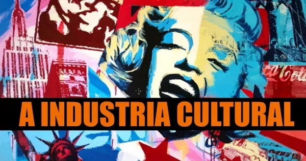
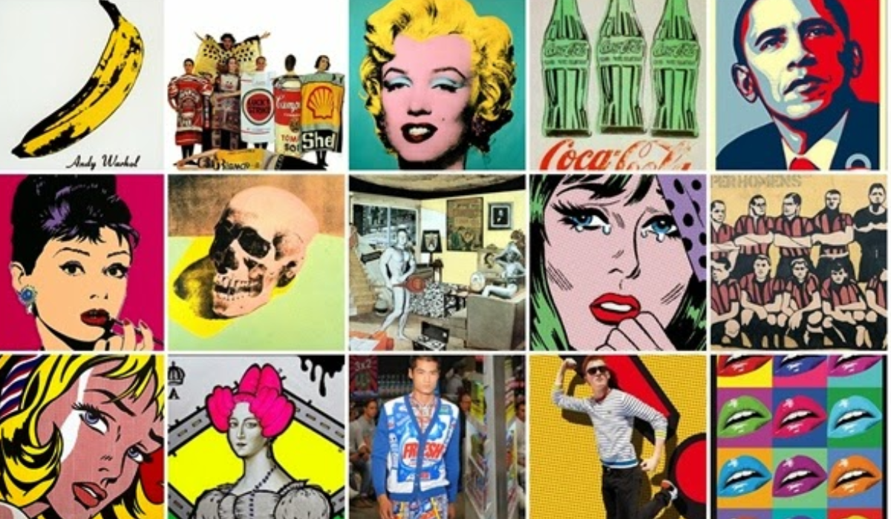

A indústria cultural é um conceito que se refere à produção e comercialização de bens e serviços culturais, incluindo música, cinema, literatura, artes visuais e teatro. Esse fenômeno emergiu no século XX, impulsionado pela industrialização e pela expansão das tecnologias de comunicação. Com o crescimento das mídias de massa, a cultura passou a ser consumida em escala global, transformando a forma como as pessoas se relacionam com a arte e com os valores culturais.


Acesse a Wikipedia
A indústria cultural é um setor fundamental que abrange a produção e distribuição de bens e serviços culturais, incluindo música, cinema, literatura, arte, moda e entretenimento. Seu desenvolvimento desempenha um papel crucial tanto na economia quanto na sociedade. Um dos principais benefícios da indústria cultural é a geração de empregos. Esse setor cria oportunidades de trabalho em diversas áreas, desde a produção até o marketing e a distribuição, contribuindo para a redução do desemprego e a formação de profissionais qualificados. Além disso, a indústria cultural é um grande estímulo à inovação e à criatividade. Ao reunir talentos diversos, ela promove a troca de ideias e a experimentação, resultando em novas expressões culturais que enriquecem a sociedade.